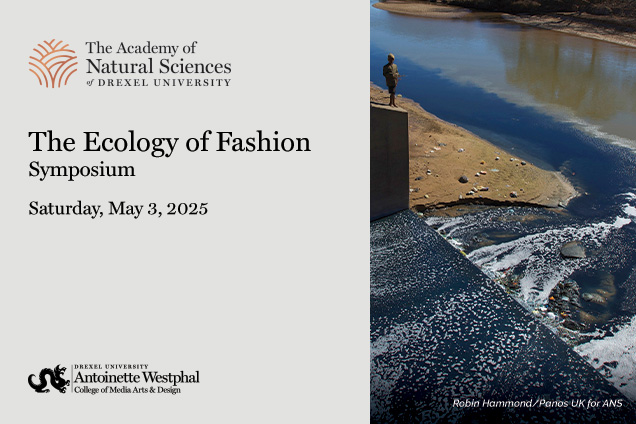

Led qualitative UX research to validate immersive VR as an effective medium for sustainability education—driving 45% higher engagement and 50% improvement in comprehension.
Participants lacked clear understanding of sustainable textile supply chains, and traditional educational formats failed to create meaningful engagement or long-term retention.
User feedback showed that immersive storytelling significantly increased curiosity and emotional connection, which improved comprehension of sustainability concepts compared to passive learning formats. This insight validated VR as an effective medium for fashion education and influenced how the VR experience prioritized narrative flow and interactive moments over informational density.

Showcased at The Ecology of Fashion Symposium.
Working under constraints: Research within a short exhibition window; rapid synthesis and on-site decision-making with faculty and developers.
Evaluating immersive environments: Post-experience surveys and interviews to evaluate engagement, comprehension, and emotional response in a live museum VR setting.
Decision: Findings turned into actionable recommendations for VR experience and exhibition design—prioritizing narrative flow and interactive moments over informational density.
This project demonstrates how immersive VR experiences can transform sustainability education by combining human-centered research with storytelling and emerging technology.
See the Project in Action
Walkthrough of the immersive Philadelphia Textile Trail VR experience showcased at The Ecology of Fashion Symposium. Watch on Vimeo.